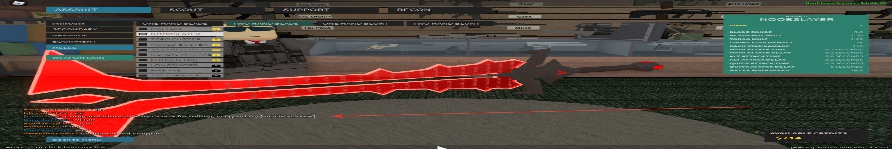

| Имя | Внешность | Отрецательный, положительный. |
|---|---|---|
| Томас | Он довольно старенький, рыжий, в шляпе и с тросточкой | Положительный |
| Мурыч | Серый,старенький (друг томаса) | Положительный |
| Барсик | молодой белый (медик) | Положительный |
| Алиса | Чёрная, ОЧЕНЬ старая (бабушка барсика) (моя кошка xD) | Положительный |
| Брюс | Серый, с синим мечом. (помошник Вордреда) | Отрецательный |
| ВОРДРЕД!!! | чёрный (ну плохие персонажи чёрные же... Да???) (ГЛАВНЫЙ ЗЛОДЕЙ!!!) | Ну конечно-же отрецательный :) |
В маленьком городе живёт кот по имени Томас. Он довольно старенький, рыжий, в шляпе и с тросточкой.
Его город разрушился, и Томас хочет победить Вордреда, чтобы освободить маленький городок от электро-шара. Вот и всё, приятного чтения :).
Жил-был кот Томас в небольшом уютном городке Бедфорде, на самой его окраине… Городок маленький, все друг друга знают. Однажды Томас сидел у себя дома, читал газету, и как вдруг… взрыв! Электро-защита взорвалась! Кто бы мог подумать, что в этот день его маленький дом обрушится. Дом Томаса стаял на окраине города. Кот вздохнул и печально посмотрел на полуразрушенные дома города. Никто не понимал, что делать. Но неожиданно появился какой-то шар вокруг города. Это был новый электро-шар. К счастью, остатки дома Томаса под него не попали. Что это такое? - подумал кот. В прошлый раз, а это было лет сто назад, маг по имени Джон спас город. Но Джон уже давно умер - его победил злой кот Вордред. Что делать дальше - не понятно. Томас попытался пройти к центру города, но Шар его не пустил. В остатках дома оставаться было нельзя, и коту пришлось уйти из своего родного города. Он был опечален, но делать было нечего…
Шёл он два часа… Кушать нечего, а голод мучает. Он оказался на заснеженном холме, посмотрел вокруг… Что это? Дом? Он пошёл туда. Хозяин дома был слегка возмущён. «Кто это стучится в 9 часов вечера?», - крикнул он. Хозяин открыл дверь… «Ч-что, Томас??? Но как? Ты же умер… Ты упал с горы…» - Да это я… Меня спас медик Барсик. - А, я тебя долго не видел. А зачем ты пришёл ко мне? - Я хотел бы переночевать у тебя в доме… - … Ну входи, просто зачем? - Электро-шар… - А, понял. Они вошли в дом, поужинали и легли спать. На утро Томас сказал: «Слушай, Мурыч, я хочу победить злого Вордреда» - Ты смеёшься? Он же сильнейший маг! - Мне нужен меч. - Хорошо, правда, я был детективом и не понимаю, как найти меч. Но, может быть, мои усы мне помогут. Итак, Мурыч купил меч у кузнеца и отдал его Томасу. ( Это тот самый меч) «Красивый», - сказал Томас, поблагодарил Мурыча и отправился в путь… 
Шёл Томас долго… Через один маленький лесок… Вдруг послышался шорох… А-А-А, что это?!? Сказал Томас. Его оглушил удар лопатой. Очнулся он в странном доме… Г-где я? Ч-что это? Он лежал на кровати в каком-то странном двухэтажном доме. Мама, смотри какого милого котика принёс папа! - Красивый! - Да, спасибо за подарок, мам! - Томас фыркнул на людей и убежал под кровать. - Стой, а-ну иди сюда! Тебя накормят! Кис-кис-кис. - Фффф ответил Томас и хотел сбежать, как его схватили и посадили в клетку. - Пока что посидит тут, - сказали хозяева. Через день кота мучал голод, и он начал жалобно мяукать. Плохие люди… подумал про себя Томас. Но он заметил дырочку, заклеенную скотчем. Он разорвал скотч и вылез наружу. Дверь была заперта, окно закрыто. Томас решил во что бы то не стало сломать его! Он взял блюдце и разбил окно. Тотчас Томас бросился в окно, но… Он упал и через боль уполз на крыльцо, там на столе лежал его меч. Кот спрятался под стол, все его искали и так и не нашли… Когда наступила ночь, он вылез из-под стола, запрыгнул на стол и взял меч. Весь израненный Томас попытался открыть ворота… Безуспешно… ещё раз, и нет! Он решил перепрыгнуть забор. Томас забрался на машину и с неё прыгнул через забор.
За забором Томаса ждал дремучий лес… Было тихо. Куда идти? Где я? Томас не знал. Но он увидел вдалеке какое-то сверкание, было ощущение, что дерево превратилось в сверкающие изумруды. Томасу было интересно, что это такое, и он пошёл к дереву. Когда он подошёл, его ослепило: сверкающий изумруд светил ему в глаза. - Что заставило тебя подойти сюда? - Вы кто? - спросил Томас. - Я волшебник Брюс! - А… - Нет ты не подойдёшь к этому дереву! Сразись со мной чтобы получить молодость и мой меч. - Ты похож на Джона… - Я его внук. Ну, давай же сразимся! - Хорошо. И они начали сражаться… Вдруг Брюс пронзил лапу Томаса, но Томас сражался до последнего и победил! Аййй… Хрипел Томас от боли, он выпил элексир молодости и сказал: Я что, теперь молодой? - Не поверил Томас. Он взял меч Брюса и свозь боль пошёл в путь.
Томас шёл и страдал, как вдруг он увидел маленький домик с красным крестиком. Это была избушка Барсика, да, того самого Барсика, который вылечил Томаса, когда он упал с горы. Томас подошёл к дому и постучал. - Кто там? - Это Томас - Что? Я Томаса уже давно лечил - Я сейчас так и умру, мне Брюс пронзил лапу - Уже бегу! Барсик открыл и не поверил своим глазам, это и в правду был Томас. - Ну, входи быстрее, я тебе полечу. - Спасибо! Сказал Томас и прошёл в комнату. - Полежи тут, я пойду за мазью - Какая мазь, мою рану и мазь не полечит. - Полечит, полечит! Барсик даже не заметил, что Томас стал молодым. - Так, не шевелись, а то не сработает. Барсик помазал рану, и Томас стал здоровым. - А откуда у тебя такая мазь? - Это наш семейный рецепт, который придумала бабушка Алиса. - Понятно… - Слушай, Томас, меня давно под страхом держит Вордред, и как назло он будет жить вечно, потому что у него есть молодость. - Она уже у меня в животе. - Откуда? - Я победил Брюса. - Вау, я даже не заметил что ты помолодел. Хорошо, что ты победил этого Брюса, он предал свой род, потому что он работал на Вордреда. - Ну да. - Эх, жалко у тебя только один меч, так мы бы могли победить Вордреда. - У меня есть второй меч, мне его подарил друг. - Ура!!! Мы сможем победить Вордреда. Томас дал синий меч Барсику и они пошли на Вордреда!
Барсик и Томас шли долго. Целый год они шли по лесам и морям, и они дошли… Вот замок Вордреда… Сказал Томас. Около замка стояла стража. Хоть они и боялись, они сразились с Томасом и Барсиком. Барсика поцарапали, но Томас стал перед Барсиком и воинственно сражался и победил! Томас взял мазь, которую они взяли с собой, и помазал рану Барсика. Они сломали мечами ворота и вошли… На них напало много солдат. Они забрались на стены, обошли солдат и вошли в зал. Там на троне сидел Вордред. - Что вы - коты - делаете в моём замке? - Тут все коты! И мы пришли, чтобы победить тебя! И тут начался бой! Сражались они 4 часа. Наконец, Вордред упал и скончался. Но Барсика чуть не убили… Томас помазал раны Барсика, и они отправились домой!
Коты вернулись в город, все коты и кошки были спасены! Электро шары были уничтожены. А Томас отстроил дом, и жил он долго и счастливо! Вот и сказочке конец! :).